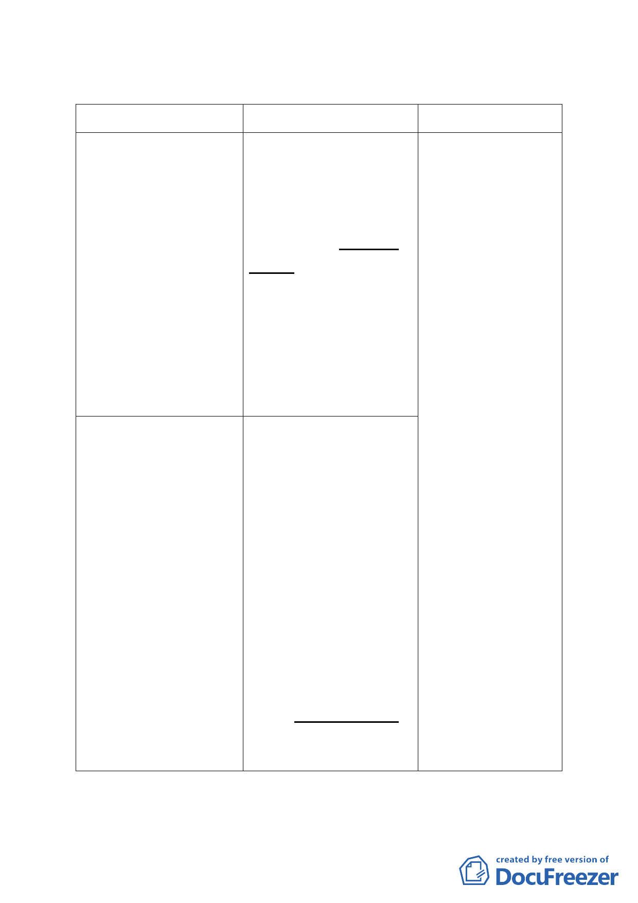

規定辦理本次都市計畫變更。
二、修訂計畫內容：
新計畫
原計畫
修訂說明
五、容積移轉
為原貌保存市定古蹟
五、容積移轉
因本案新建建物未
為原貌保存市定古蹟「新 使用基準容積，另考
「新芳春茶行」，致本 芳春茶行」，致本計畫區 量「古蹟土地容積移
計畫區內13 筆土地原 內13 筆土地原依法可建 轉辦法」現行規定，
依法可建築之基準容積 築之基準容積扣除已建 古蹟可移出容積毋
受到限制部分，得依「古 築容積受到限制部分，得 須扣除古蹟或非古
蹟土地容積移轉辦法」 依「古蹟土地容積移轉辦 蹟之量體，且本案古
之規定辦理。有關補償
容積、獎勵容積及因開
發建築所使用之基準容
法」之規定辦理。有關補 蹟業交付信託進行
償容積、獎勵容積及因開 修復，後續將併同其
發建築所使用之基準容 座落土地及再利用
積部分，不得依前揭辦 積部分，不得依前揭辦法 經費贈與本府文化
法辦理容積移轉。
辦理容積移轉。
局，故本案計
陸、事業及財務計畫 陸、事業及財務計畫備註 畫實際得依古蹟土
備註2.
2.
地容積移轉辦法申
「新芳春茶行」市定古 「新芳春茶行」市定古 請移轉之容積，即為
蹟、其定著土地及經本 蹟、其定著土地及經本府 原依法可建築之基
府文化局核定之維護再 文化局核定之維護再利 準容積。為免後續執
利用經費，應交付信 用經費，應交付信託，並 行疑義，刪除「扣除
託，並以本府（文化局） 以本府（文化局）為受益 已建築容積」等文
為受益人，以古蹟修復 人，以古蹟修復完成及捐 字。
完成及捐贈本府為信託
目的。本案於信託契約
簽訂完成送本府（文化
贈本府為信託目的。本案
於信託契約簽訂完成送
本府（文化局）備查後始
局）備查後始同意原依
法可建築之基準容積受
到限制部份予以容積移
同意原依法可建築之基
準容積扣除已建築容積
受到限制部份予以容積
轉。
移轉。
三、本案係市府 100 年 11 月 3 日府都規字第 10037068103 號函送
到會。
-8-